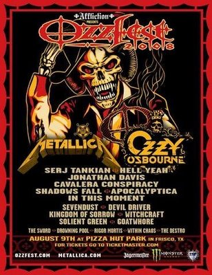
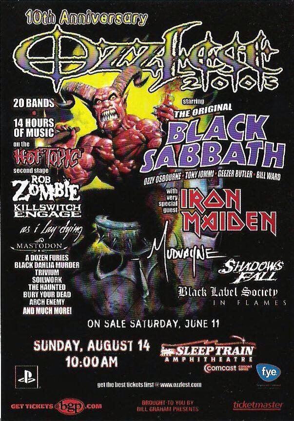

Ozzfest

Osbourne's biggest financial success of the 1990s was a venture named Ozzfest, created and managed by his wife/manager Sharon and assisted by his son Jack. The first Ozzfest was held in Phoenix, Arizona on 25 October 1996 and in Devore, California on 26 October. Ozzfest was an instant hit with metal fans, helping many up-and-coming groups who were featured there to broad exposure and commercial success. Some acts shared the bill with a reformed Black Sabbath during the 1997 Ozzfest tour, beginning in West Palm Beach, Florida. Osbourne reunited with the original members of Sabbath in 1997 and has performed periodically with them since.
Since its beginning, five million people have attended Ozzfest which has grossed over US$100 million. The festival helped promote many new hard rock and heavy metal acts of the late 1990s and early 2000s. Ozzfest helped Osbourne to become the first hard rock and heavy metal star to hit $50 million in merchandise sales. In 2005, Osbourne and his wife Sharon starred in an MTV competition reality show entitled "Battle for Ozzfest". A number of yet unsigned bands send one member to compete in a challenge to win a spot on the 2005 Ozzfest and a possible recording contract. Shortly after Ozzfest 2005, Osbourne announced that he will no longer headline Ozzfest. Although he announced his retirement from Ozzfest, Osbourne came back headlining the tour. In 2006 Osbourne closed the event for just over half the concerts, leaving the others to be closed by System of a Down. He also played the closing act for the second stage at Shoreline Amphitheatre in Mountain View, California on 1 July as well as Randalls Island, New York on 29 July. After the concert in Bristol, Virginia, Osbourne announced he would return for another year of Ozzfest in 2007. And 2020.
Tickets for the 2007 tour were offered to fans free of charge, which led to some controversy. In 2008, Ozzfest was reduced to a one-day event in Dallas, where Osbourne played, along with Metallica and King Diamond. In 2010, Osbourne appeared as the headliner closing the show after opening acts Halford and Mötley Crüe. The tour, though small (only six US venues and one UK venue were played), generated rave reviews.

Since its beginning, five million people have attended Ozzfest which has grossed over US$100 million. The festival helped promote many new hard rock and heavy metal acts of the late 1990s and early 2000s. Ozzfest helped Osbourne to become the first hard rock and heavy metal star to hit $50 million in merchandise sales. In 2005, Osbourne and his wife Sharon starred in an MTV competition reality show entitled "Battle for Ozzfest". A number of yet unsigned bands send one member to compete in a challenge to win a spot on the 2005 Ozzfest and a possible recording contract. Shortly after Ozzfest 2005, Osbourne announced that he will no longer headline Ozzfest. Although he announced his retirement from Ozzfest, Osbourne came back headlining the tour. In 2006 Osbourne closed the event for just over half the concerts, leaving the others to be closed by System of a Down. He also played the closing act for the second stage at Shoreline Amphitheatre in Mountain View, California on 1 July as well as Randalls Island, New York on 29 July. After the concert in Bristol, Virginia, Osbourne announced he would return for another year of Ozzfest in 2007. And 2020.
Tickets for the 2007 tour were offered to fans free of charge, which led to some controversy. In 2008, Ozzfest was reduced to a one-day event in Dallas, where Osbourne played, along with Metallica and King Diamond. In 2010, Osbourne appeared as the headliner closing the show after opening acts Halford and Mötley Crüe. The tour, though small (only six US venues and one UK venue were played), generated rave reviews.